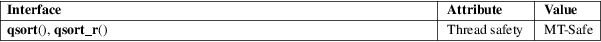

qsort, qsort_r − sort an array
Standard C library (libc, −lc)
#include <stdlib.h>
void
qsort(void base[.size *
.nmemb], size_t nmemb,
size_t size,
int (*compar)(const void
[.size], const void [.size]));
void qsort_r(void base[.size *
.nmemb], size_t nmemb,
size_t size,
int (*compar)(const void
[.size], const void [.size],
void *),
void *arg);
Feature Test Macro Requirements for glibc (see feature_test_macros(7)):
qsort_r():
_GNU_SOURCE
The qsort() function sorts an array with nmemb elements of size size. The base argument points to the start of the array.
The contents of the array are sorted in ascending order according to a comparison function pointed to by compar, which is called with two arguments that point to the objects being compared.
The comparison function must return an integer less than, equal to, or greater than zero if the first argument is considered to be respectively less than, equal to, or greater than the second. If two members compare as equal, their order in the sorted array is undefined.
The qsort_r() function is identical to qsort() except that the comparison function compar takes a third argument. A pointer is passed to the comparison function via arg. In this way, the comparison function does not need to use global variables to pass through arbitrary arguments, and is therefore reentrant and safe to use in threads.
The qsort() and qsort_r() functions return no value.
For an explanation of the terms used in this section, see attributes(7).

qsort()
C11, POSIX.1-2008.
qsort()
POSIX.1-2001, C89, SVr4, 4.3BSD.
qsort_r()
glibc 2.8.
To compare C strings, the comparison function can call strcmp(3), as shown in the example below.
For one example of use, see the example under bsearch(3).
Another example is the following program, which sorts the strings given in its command-line arguments:
#include
<stdio.h>
#include <stdlib.h>
#include <string.h>
static int
cmpstringp(const void *p1, const void *p2)
{
/* The actual arguments to this function are "pointers
to
pointers to char", but strcmp(3) arguments are
"pointers
to char", hence the following cast plus dereference.
*/
return
strcmp(*(const char **) p1, *(const char **) p2);
}
int
main(int argc, char *argv[])
{
if (argc < 2) {
fprintf(stderr, "Usage: %s <string>...\n",
argv[0]);
exit(EXIT_FAILURE);
}
qsort(&argv[1], argc − 1, sizeof(char *), cmpstringp);
for (size_t j =
1; j < argc; j++)
puts(argv[j]);
exit(EXIT_SUCCESS);
}
sort(1), alphasort(3), strcmp(3), versionsort(3)